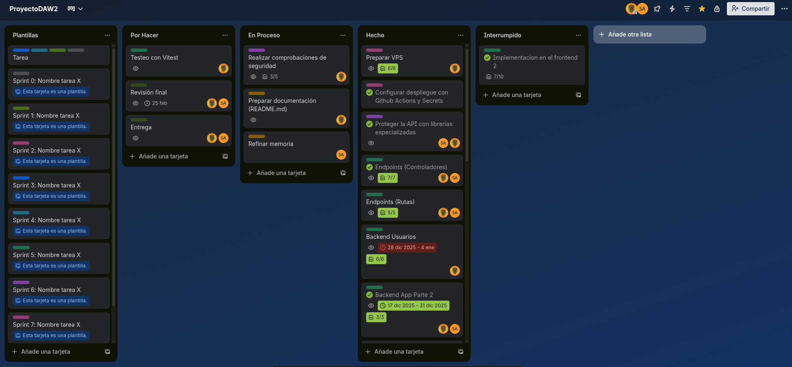
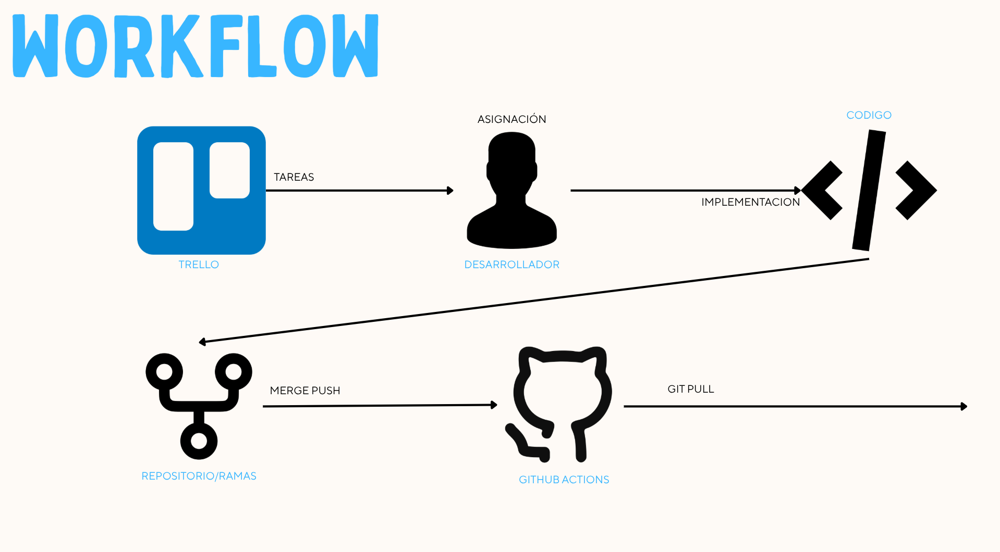
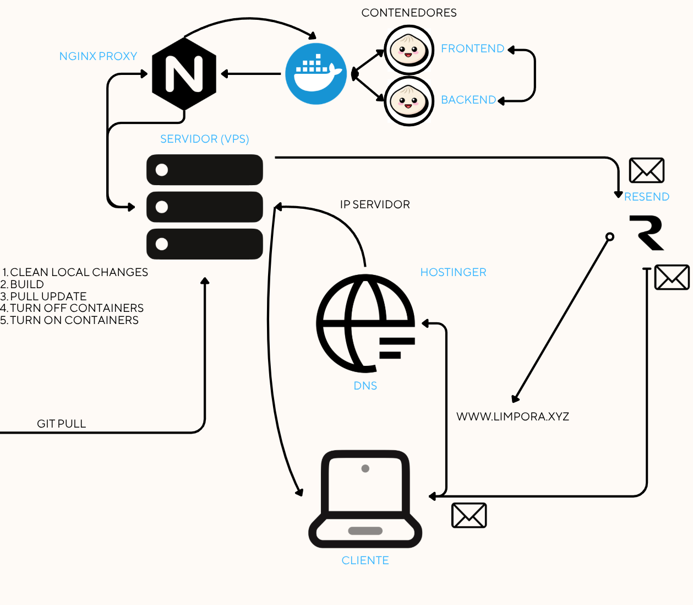
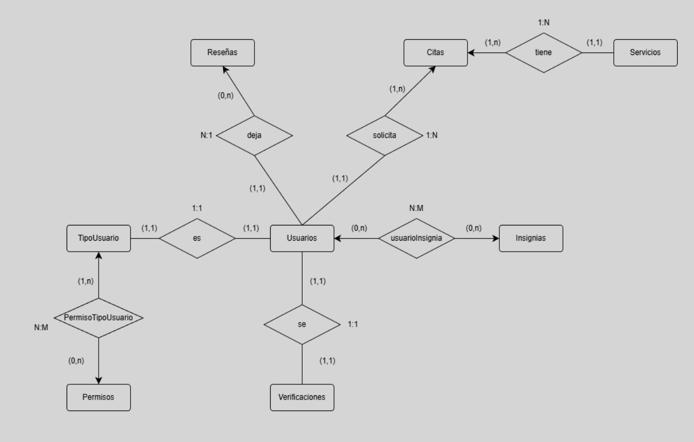
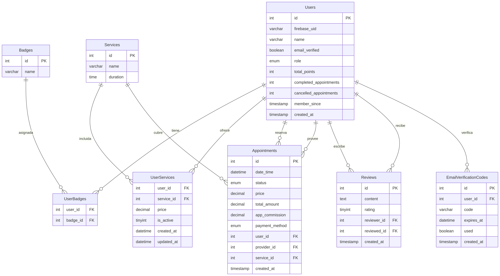
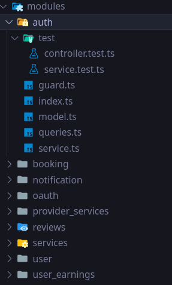
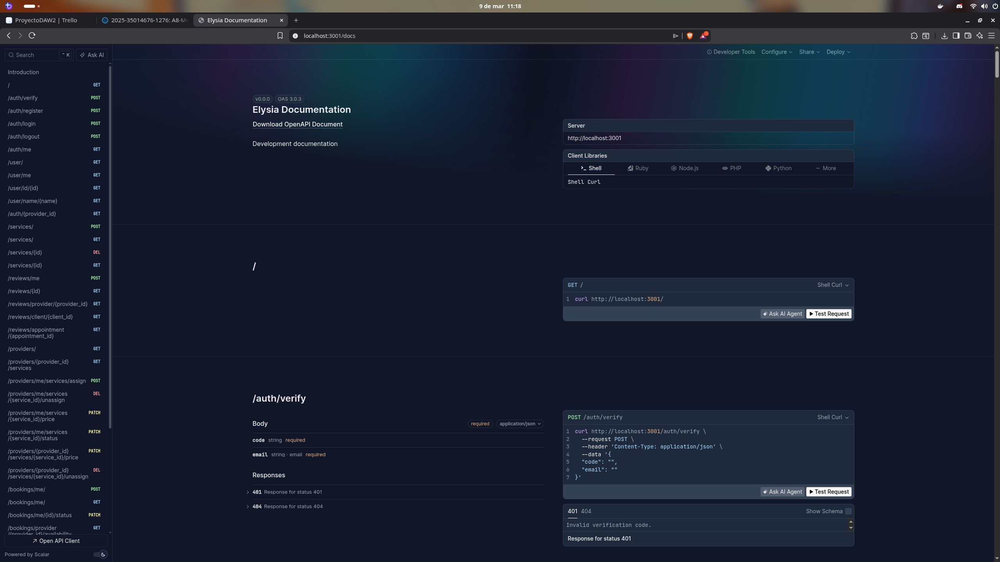
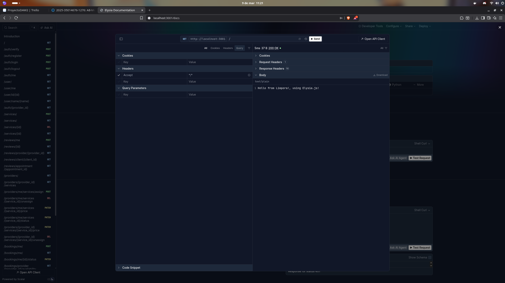
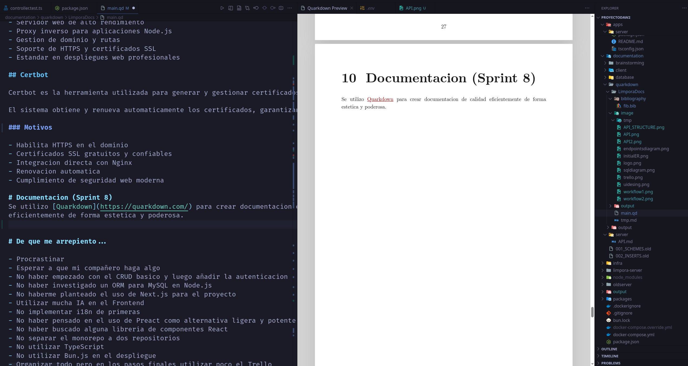

Limpora es una aplicacion y servicio web que conecta a clientes con autonomos especializados en servicios de limpieza, facilitando el contacto, la contratacion y la gestion de trabajos de forma clara, rapida y segura.
Limpora esta dirigido a:
Limpora basa su modelo de negocio en la intermediacion de servicios de limpieza entre clientes y profesionales. La plataforma aplica una tarifa o comision en el momento en que se concreta una cita o contratacion entre usuarios.
Ademas, la empresa dispone de una red propia de profesionales de limpieza, lo que permite ofrecer servicios directos dentro de la aplicacion. Esto garantiza disponibilidad, calidad controlada y una experiencia uniforme para los clientes.
De esta forma, Limpora combina dos fuentes de ingresos:
Se ha optado por distribuir la planificación de los sprints en 8 partes, y para ello se ha decidido repartir las tareas del equipo a través de un tablero que emplea la aplicación Trello.

https://github.com/Garkatron/ProyectoDaw2
El ciclo de desarrollo parte de Trello, donde se gestionan y asignan las tareas. Un desarrollador toma una tarea asignada y la implementa en su rama local del repositorio. Una vez lista, hace merge y push al repositorio remoto, lo que dispara GitHub Actions, que ejecuta el pipeline de CI/CD mediante un git pull automatizado al servidor.
Actions detecta cambios en la rama principal, ejecuta automáticamente los siguientes pasos en el servidor:
El servidor corre Docker, que levanta dos contenedores: uno para el frontend y otro para el backend. El tráfico entrante pasa por un Nginx como reverse proxy, que distribuye las requests a cada contenedor según corresponda.
Acceso del cliente El dominio www.limpora.xyz está configurado en Hostinger DNS, que apunta a la IP del servidor. El cliente accede desde el navegador a ese dominio. El sistema también integra Resend para el envío de emails transaccionales.



La base de datos de Limpora esta compuesta por 8 tablas que gestionan toda la logica de la plataforma.
Users es la tabla central del sistema. Almacena el perfil de cada usuario vinculado a Firebase Auth mediante firebase_uid, con su rol (cliente, proveedor o admin) y estadisticas de uso como puntos y citas completadas.
Services define los tipos de limpieza disponibles en la plataforma. UserServices actua como puente entre usuarios y servicios, permitiendo que cada proveedor defina su propio precio por servicio.
Appointments registra cada cita contratada, incluyendo el cliente, el proveedor, el servicio, el precio, la comision de la app y el metodo de pago. Es la tabla mas importante a nivel de negocio.
Reviews permite que los usuarios se valoren mutuamente tras una cita. La restriccion UNIQUE sobre el par revisor-revisado evita valoraciones duplicadas.
Badges y UserBadges forman el sistema de insignias y gamificacion de la plataforma, donde los usuarios pueden acumular logros.
EmailVerificationCodes gestiona los codigos temporales enviados por correo para verificar la identidad del usuario, con fecha de expiracion y control de uso.

Para este proyecto, hemos simplificado la infraestructura eliminando la necesidad de un servidor de base de datos externo, optando por una solución embebida de alto rendimiento. Limpora utiliza SQLite como motor de base de datos relacional. A diferencia de los sistemas cliente-servidor tradicionales, SQLite reside directamente en el sistema de archivos, lo que elimina la latencia de red y simplifica drásticamente el despliegue y el mantenimiento.
bun:sqlite, las consultas se ejecutan a velocidad nativa, siendo ideal para aplicaciones que requieren respuestas inmediatas.El frontend de Limpora utiliza Vite como herramienta de construcción y React con TSX para el desarrollo de la interfaz, aprovechando el tipado estricto de TypeScript para ofrecer una experiencia de desarrollo segura y eficiente.
El backend de Limpora utiliza Bun como runtime y ElysiaJS como framework, aprovechando la velocidad nativa de TypeScript para ofrecer una API REST de alto rendimiento.
bun:sqlite, eliminando la latencia de red y simplificando el despliegue sin sacrificar la integridad de los datos.El backend implementa autenticacion basada en tokens JWT y cifrado de contraseñas mediante bcrypt.
Ademas, se aplican multiples capas de seguridad:
Se utiliza express-validator para validar y sanitizar datos recibidos en peticiones HTTP antes de procesarlos.
El sistema implementa logging estructurado con pino y pino-http, junto con morgan para registros de desarrollo.
El backend integra servicios externos para funcionalidades adicionales:
La API REST se documenta mediante openapi elysiajs builtin plugin, permitiendo visualizar y probar endpoints desde una interfaz web facil, rapida y atractiva.
Se utilizan herramientas para mejorar el flujo de desarrollo:
La API está organizada en módulos independientes. Cada módulo encapsula toda su lógica en los siguientes archivos: Los modulos pueden no tener Router, Queries ni Middleware especifico pero siempre tendran service y model. EJ: Un servicio interno de la API o el propio modulo de OAuth que no tiene queries.
index.ts — Router
Define las rutas HTTP del módulo y conecta cada endpoint con su handler correspondiente en el servicio.
model.ts — Modelo de datos
Declara los tipos y esquemas de datos que reciben los endpoints del módulo. Es la fuente de verdad del módulo según la convención de ElysiaJS. Todos los demás archivos derivan sus tipos desde aquí.
queries.ts — Queries
Contiene todas las consultas a la base de datos relacionadas al módulo. Centraliza el acceso a datos.
service.ts — Servicio
Clase abstracta con métodos estáticos que implementan la lógica de negocio. Sus métodos son consumidos tanto por los endpoints en index.ts como por otros servicios del sistema.
guard.ts — Guard / Middleware
Middleware de autenticación. Verifica y valida el token de acceso antes de que la request llegue al handler. Se aplica a las rutas que requieren autenticación.
test.ts — Tests
Contiene los tests de integración y unitarios para index.ts y service.ts. Cubre tanto el comportamiento de los endpoints como la lógica del servicio.
modules/
└── <modulo>/
├── index.ts # Router + endpoints
├── model.ts # Tipos de datos (fuente de verdad)
├── queries.ts # Acceso a base de datos
├── service.ts # Lógica de negocio
├── guard.ts # Middleware de auth (Especifico de Auth)
└── test.ts # Tests
La API de limpora tiene una documensacion interactiva a la que se puede acceder en desarrollo mediante el localhost:<puerto-definido>, dejare capturas adjuntas.


Durante el Sprint 6, se actualizaron las medidas de seguridad de Limpora para integrarlas de forma nativa con el ecosistema de Bun y ElysiaJS, optimizando la protección sin penalizar el rendimiento.
Se utiliza el plugin oficial @elysiajs/helmet para la gestión de cabeceras HTTP seguras.
Implementación mediante el plugin @elysiajs/cors para restringir el acceso a la API.
Se aplica limitación de peticiones por IP para proteger la disponibilidad del servidor frente a abusos o ataques de denegación de servicio (DoS).
ElysiaJS utiliza TypeBox de forma nativa para validar esquemas de datos antes de que lleguen a la lógica de negocio.
Migración de librerías externas a los métodos nativos de Bun.password.
La aplicacion web Limpora sigue una arquitectura cliente-servidor separada en dos capas principales: frontend y backend. Ambos sistemas se comunican mediante una API REST expuesta por el backend y consumida por el frontend.
Esta separacion permite desacoplar la interfaz de usuario de la logica de negocio, facilitando el mantenimiento, la evolucion del sistema y la escalabilidad del servicio tanto en horizontal como en vertical.
El frontend, desarrollado en React, se ejecuta en el navegador del usuario y gestiona la experiencia visual, la navegacion y la interaccion con la plataforma. Todas las operaciones de datos se realizan mediante peticiones HTTP hacia la API.
El backend, desarrollado en Node.js con Express, centraliza la logica de negocio, autenticacion, validacion de datos y acceso a la base de datos MySQL. Tambien gestiona la integracion con servicios externos como envio de correos y servicios cloud.
La comunicacion entre capas sigue el modelo REST, utilizando solicitudes HTTP con respuestas en formato JSON. Esto permite:
A nivel de despliegue, la aplicacion se ejecuta en contenedores Docker orquestados mediante Docker Compose dentro de un servidor VPS en AWS. Nginx actua como proxy inverso, recibiendo el trafico HTTPS del dominio y redirigiendolo a los servicios internos correspondientes.
Esta arquitectura permite:
flowchart TD
A[Usuario] --> B[Abre la aplicacion web o movil]
B --> C[Frontend: React + Tailwind]
C --> D{Accion del usuario}
D -- Registrar o Iniciar sesion --> E[Firebase Auth: login o signup]
D -- Solicitar servicio --> F[POST /services/request]
D -- Consultar datos --> G[GET /data]
E --> H{Validar token de Firebase}
H -- Exito --> I[Generar respuesta exitosa]
H -- Error --> J[Enviar error al frontend]
F --> K[Verificar token Firebase y permisos]
K --> L[Procesar solicitud de servicio]
G --> M[Verificar token Firebase y obtener datos]
L --> N[Base de datos MySQL]
M --> N
I --> N
L --> O[Servicios externos: Resend, Firebase, Google APIs]
N --> P[Backend retorna JSON al Frontend]
O --> P
J --> P
P --> Q[Usuario recibe respuesta]Limpora se encuentra desplegado en un servidor VPS en la nube, accesible mediante un dominio propio. La infraestructura permite ejecutar tanto el backend como el frontend en un entorno controlado, escalable y accesible desde internet.
La aplicacion esta disponible en:
Hostinger es el proveedor utilizado para la gestion del dominio y servicios asociados de DNS.
Amazon Web Services (AWS) es el proveedor de infraestructura en la nube utilizado para alojar el servidor VPS donde se ejecuta la aplicacion.
El backend y los servicios del sistema se ejecutan en una instancia virtual configurada y administrada por el equipo de desarrollo.
Docker se utiliza para contenerizar la aplicacion y sus servicios, permitiendo ejecutar el sistema en entornos aislados y reproducibles.
Mediante contenedores se empaquetan el backend, dependencias y configuraciones necesarias para su ejecucion.
Docker Compose es una herramienta que permite definir y ejecutar aplicaciones formadas por multiples contenedores mediante un unico archivo de configuracion. En Limpora se utiliza para orquestar los servicios necesarios del sistema, como el backend y la base de datos, facilitando su ejecucion conjunta.
La configuracion de contenedores se define en el archivo:
./docker-compose.yml
GitHub Workflows (GitHub Actions) es el sistema de integracion y automatizacion utilizado para ejecutar tareas automaticas sobre el repositorio de Limpora, como pruebas, construccion y despliegue.
Mediante flujos definidos en el repositorio, el sistema puede validar cambios en cada actualizacion del codigo y automatizar procesos del ciclo de desarrollo.
Se configuro el repositiorio con su propia cuenta en el VPS y se le dieron los permisos minimos necesarios para limpiar los cambios locales, bajar los cambios remotos y ejecutar docker compose con exito.
Nginx es el servidor web y proxy inverso utilizado en el despliegue de Limpora. Se encarga de recibir las peticiones HTTP desde internet y redirigirlas a los servicios internos de la aplicacion, como el frontend y el backend.
Tambien gestiona aspectos clave del acceso publico, como el dominio, certificados SSL y distribucion de trafico hacia los contenedores correspondientes.
Certbot es la herramienta utilizada para generar y gestionar certificados SSL gratuitos de Let’s Encrypt en el servidor de Limpora. Permite habilitar conexiones seguras HTTPS en el dominio de la aplicacion mediante Nginx.
El sistema obtiene y renueva automaticamente los certificados, garantizando que las comunicaciones entre usuarios y la plataforma se realicen de forma cifrada.
Se utilizo Quarkdown para crear documentacion de calidad eficientemente de forma estetica y poderosa.

Matias Gulias Carrascal
Desarrollador principal de Limpora
Kevin Alias la “k”
Ausente durante todo el proyecto.